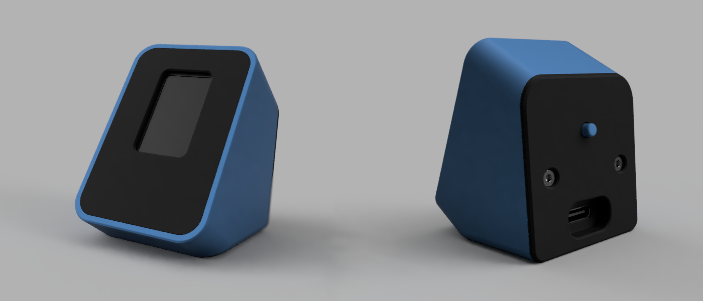

ESP32-C3 · XIAO
device32 firmware.
Connect your device32 over USB and flash firmware from the browser. Pick a release, pick a build, then hit select device.

Web flasher
Before you flash
- full_demo is the build that ships on the device — auto-cycling animations and games. Tap the button to advance, hold 3s to toggle auto-play.
- The other entries are the individual examples (boids, snake, pong, timer, ...).
- Erase is on by default; the device will reboot into the new firmware when done.
- weather needs your WiFi. After flashing it raises a
device32-weatherhotspot — join it, open192.168.4.1and enter your network. The credentials are stored on the device, never in the firmware. - Web Serial needs desktop Chrome or Edge (89+) and a USB connection.
No example ships with credentials baked in, so every build here is safe to flash. weather is configured from a phone on first boot; hold the button for ~4 seconds any time to re-enter setup. Browse the sources in examples/.